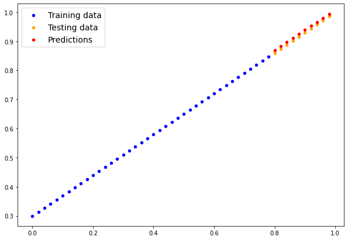

import torch
from torch import nn # nn contains all of PyTorch's building blocks for neural networks
import matplotlib.pyplot as plt
# Check PyTorch version
torch.__version__'1.13.1'Based on Bourkes’s https://www.learnpytorch.io/
Here’s a standard PyTorch workflow.

In [1]:
import torch
from torch import nn # nn contains all of PyTorch's building blocks for neural networks
import matplotlib.pyplot as plt
# Check PyTorch version
torch.__version__'1.13.1'Here we will generate our own data, a straight line, then use PyTorch to find the slope (weight) and intercept (bias).
In [7]:
# Create *known* parameters
weight = 0.7
bias = 0.3
# Create data
start = 0
end = 1
step = 0.02
X = torch.arange(start, end, step).unsqueeze(dim=1)
y = weight * X + bias
X[:10], y[:10](tensor([[0.0000],
[0.0200],
[0.0400],
[0.0600],
[0.0800],
[0.1000],
[0.1200],
[0.1400],
[0.1600],
[0.1800]]),
tensor([[0.3000],
[0.3140],
[0.3280],
[0.3420],
[0.3560],
[0.3700],
[0.3840],
[0.3980],
[0.4120],
[0.4260]]))In [8]:
# Create train/test split
train_split = int(0.8 * len(X)) # 80% of data used for training set, 20% for testing
X_train, y_train = X[:train_split], y[:train_split]
X_test, y_test = X[train_split:], y[train_split:]
len(X_train), len(y_train), len(X_test), len(y_test)(40, 40, 10, 10)Create a function to visualize the data.
In [22]:
def plot_predictions(train_data=X_train,
train_labels=y_train,
test_data=X_test,
test_labels=y_test,
predictions=None):
"""
Plots training data, test data and compares predictions.
"""
plt.figure(figsize=(10, 7))
# Plot training data in blue
plt.scatter(train_data, train_labels, c="b", s=20, label="Training data")
# Plot test data in green
plt.scatter(test_data, test_labels, c="orange", s=20, label="Testing data")
if predictions is not None:
# Plot the predictions in red (predictions were made on the test data)
plt.scatter(test_data, predictions, c="r", s=20, label="Predictions")
# Show the legend
plt.legend(prop={"size": 14});In [23]:
plot_predictions()
There are 4 essential modules for creating any NN
torch.nn contains all the building blocks of the computational graphtorch.optim contains the different optimization algorithmstorch.utils.data.Dataset selects datatorch.utils.data.DataLoader loads the dataThe NN itself, defined by torch.nn, contains the following sub-modules
nn.Module has the layersnn.Parameter has the weights and biasesFinally, all the nn.Module subclasses require a forward() method that defines the flow of the computation, or structure of the NN.
We create a standard linear regression class.
In [2]:
# Create a Linear Regression model class
class LinearRegressionModel(nn.Module): # <- almost everything in PyTorch is a nn.Module (think of this as neural network lego blocks)
def __init__(self):
super().__init__()
self.weights = nn.Parameter(torch.randn(1, # <- start with random weights (this will get adjusted as the model learns)
dtype=torch.float), # <- PyTorch uses float32 by default
requires_grad=True) # <- update this value with gradient descent
self.bias = nn.Parameter(torch.randn(1, # <- start with random bias (this will get adjusted as the model learns)
dtype=torch.float), # <- PyTorch uses float32 by default
requires_grad=True) # <- update this value with gradient descent
# Forward defines the computation in the model
def forward(self, x: torch.Tensor) -> torch.Tensor: # <- "x" is the input data (e.g. training/testing features)
return self.weights * x + self.bias # <- this is the linear regression formula (y = m*x + b)Now, let’s create an instance of the model and check its prameters.
In [3]:
# Set manual seed since nn.Parameter are randomly initialzied
torch.manual_seed(42)
# Create an instance of the model
# (this is a subclass of nn.Module that contains nn.Parameter(s))
model_0 = LinearRegressionModel()
# Check the nn.Parameter(s) within the nn.Module subclass we created
list(model_0.parameters())[Parameter containing:
tensor([0.3367], requires_grad=True),
Parameter containing:
tensor([0.1288], requires_grad=True)]We can retrieve the state of the model, with .stat_dict()
In [18]:
# List named parameters
model_0.state_dict()OrderedDict([('weights', tensor([0.3367])), ('bias', tensor([0.1288]))])torch.inference_mode()Before optimizing, we can already make (bad) predictions with this randomly initialized model. We will use the torch.inference_mode() function that streamlines the inference process.
In [24]:
# Make predictions with model
with torch.inference_mode():
y_preds = model_0(X_test)
# Note: in older PyTorch code you might also see torch.no_grad()
# with torch.no_grad():
# y_preds = model_0(X_test)
# Check the predictions
print(f"Number of testing samples: {len(X_test)}")
print(f"Number of predictions made: {len(y_preds)}")
print(f"Predicted values:\n{y_preds}")
plot_predictions(predictions=y_preds)Number of testing samples: 10
Number of predictions made: 10
Predicted values:
tensor([[0.3982],
[0.4049],
[0.4116],
[0.4184],
[0.4251],
[0.4318],
[0.4386],
[0.4453],
[0.4520],
[0.4588]])These predicitions are way off, as expected, since they are based on a random initialization. Let us compute the errors.
In [25]:
# errors
y_test - y_predstensor([[0.4618],
[0.4691],
[0.4764],
[0.4836],
[0.4909],
[0.4982],
[0.5054],
[0.5127],
[0.5200],
[0.5272]])We need to define
Here we will use
MAE torch.nn.L1Loss()
SGD torch.optim.SGD(params, lr)
params are the model parameters that we want to adjust optimallylr is the learning rate (step-size) of the gradient descent, a hyperparameter.
In [4]:
# Create the loss function
loss_fn = nn.L1Loss() # MAE loss is same as L1Loss
# Create the optimizer
optimizer = torch.optim.SGD(params=model_0.parameters(), # parameters of target model to optimize
lr=0.01) # learning rate
# (how much the optimizer should change parameters at each
# step, higher=more (less stable), lower=less (might take a long time))Finally, we need the training and testing loops.

Here are the 5 basic steps:
model(x_train)loss=loss_fn(y_pred,y_train)optimizer.zero_grad()loss.backward()optimizer.step()
In 3 steps:
model(x_test)loss=loss_fn(y_pred,y_test)We put it all together, and train for 1000 epochs of the SGD.
In [9]:
torch.manual_seed(42)
# Set the number of epochs (how many times the model will pass over the training data)
epochs = 100
# Create empty loss lists to track values
train_loss_values = []
test_loss_values = []
epoch_count = []
for epoch in range(epochs):
### Training
# Put model in training mode (this is the default state of a model)
model_0.train()
# 1. Forward pass on train data using the forward() method inside
y_pred = model_0(X_train)
# print(y_pred)
# 2. Calculate the loss (how different are our models predictions to the ground truth)
loss = loss_fn(y_pred, y_train)
# 3. Zero grad of the optimizer
optimizer.zero_grad()
# 4. Loss backwards
loss.backward()
# 5. Advance the optimizer
optimizer.step()
### Testing
# Put the model in evaluation mode
model_0.eval()
with torch.inference_mode():
# 1. Forward pass on test data
test_pred = model_0(X_test)
# 2. Caculate loss on test data
test_loss = loss_fn(test_pred, y_test.type(torch.float)) # predictions come in torch.float datatype, so comparisons need to be done with tensors of the same type
# Print out what's happening every 10 steps
if epoch % 20 == 0:
epoch_count.append(epoch)
train_loss_values.append(loss.detach().numpy())
test_loss_values.append(test_loss.detach().numpy())
print(f"Epoch: {epoch} | MAE Train Loss: {loss} | MAE Test Loss: {test_loss} ")Epoch: 0 | MAE Train Loss: 0.31288138031959534 | MAE Test Loss: 0.48106518387794495
Epoch: 20 | MAE Train Loss: 0.08908725529909134 | MAE Test Loss: 0.21729660034179688
Epoch: 40 | MAE Train Loss: 0.04543796554207802 | MAE Test Loss: 0.11360953003168106
Epoch: 60 | MAE Train Loss: 0.03818932920694351 | MAE Test Loss: 0.08886633068323135
Epoch: 80 | MAE Train Loss: 0.03132382780313492 | MAE Test Loss: 0.07232122868299484 Finally, plot the loss curves.
In [10]:
# Plot the loss curves
plt.plot(epoch_count, train_loss_values, label="Train loss")
plt.plot(epoch_count, test_loss_values, label="Test loss")
plt.title("Training and test loss curves")
plt.ylabel("Loss")
plt.xlabel("Epochs")
plt.legend();Now, inspect the model’s state_dict() to see how close we got.
In [32]:
# Find our model's learned parameters
print("The model learned the following values for weights and bias:")
print(model_0.state_dict())
print("\nThe original values for weights and bias are:")
print(f"weights: {weight}, bias: {bias}")The model learned the following values for weights and bias:
OrderedDict([('weights', tensor([0.6990])), ('bias', tensor([0.3093]))])
And the original values for weights and bias are:
weights: 0.7, bias: 0.3To do inference with a PyTorch model:
model.eval()with torch.inference_mode()In [33]:
# 1. Set the model in evaluation mode
model_0.eval()
# 2. Setup the inference mode context manager
with torch.inference_mode():
# 3. Make sure the calculations are done with the model and data on the same device
# in our case, we haven't setup device-agnostic code yet so our data and model are
# on the CPU by default.
# model_0.to(device)
# X_test = X_test.to(device)
y_preds = model_0(X_test)
y_preds
# plot the result
plot_predictions(predictions=y_preds)
Final error plot, showing noise “ball” limit.
In [34]:
plt.plot(epoch_count, train_loss_values, label="Train loss")
plt.plot(epoch_count, test_loss_values, label="Test loss")
plt.title("Training and test loss curves")
plt.yscale("log")
plt.ylabel("Loss")
plt.xlabel("Epochs")
plt.legend();Three main methods:
torch.save uses pickle to save anythingtorch.load unpicklestorch.nn.Module.load_state_dict loads a model’s parameter dictionary (model_save_dict())In [41]:
from pathlib import Path
# 1. Create 'models' directory
MODEL_PATH = Path("models")
MODEL_PATH.mkdir(parents=True, exist_ok=True)
# 2. Create model save path
MODEL_NAME = "01_pytorch_workflow_model_0.pth"
MODEL_SAVE_PATH = MODEL_PATH / MODEL_NAME
# 3. Save the model state dict
print(f"Saving model to: {MODEL_SAVE_PATH}")
torch.save(obj=model_0.state_dict(), # only saving the state_dict() only saves the models learned parameters
f=MODEL_SAVE_PATH) Saving model to: models/01_pytorch_workflow_model_0.pthIn [42]:
# Check the saved file path
!ls -l models/01_pytorch_workflow_model_0.pth-rw-r--r--@ 1 markasch staff 1207 Feb 14 14:15 models/01_pytorch_workflow_model_0.pthWe have saved the model’s state dictionary at a given path. We can now load it using
torch.nn.Module.load_state_dict(torch.load(f=))
To test this, we create anew instance of the LinearRegressionModel(), which being a subclass of torch.nn.Module has all its built-in methods, and in particular load_state_dict().
In [43]:
# Instantiate a new instance of our model (this will be instantiated
# with random weights)
loaded_model_0 = LinearRegressionModel()
# Load the state_dict of our saved model (this will update the new
# instance of our model with trained weights)
loaded_model_0.load_state_dict(torch.load(f=MODEL_SAVE_PATH))<All keys matched successfully>Now, we are ready to perform inference.
In [44]:
# 1. Put the loaded model into evaluation mode
loaded_model_0.eval()
# 2. Use the inference mode context manager to make predictions
with torch.inference_mode():
loaded_model_preds = loaded_model_0(X_test) # perform a forward pass on the test data with the loaded model
# Compare previous model predictions with loaded model predictions
# (these should be the same)
y_preds == loaded_model_predstensor([[True],
[True],
[True],
[True],
[True],
[True],
[True],
[True],
[True],
[True]])Using all the above snippets, we can now write a complete, device agnostic workflow.
In [45]:
# Import PyTorch and matplotlib
import torch
from torch import nn # nn contains all of PyTorch's building blocks for neural networks
import matplotlib.pyplot as plt
# Check PyTorch version
torch.__version__'1.13.1'In [49]:
# Setup device agnostic code
#device = "cuda" if torch.cuda.is_available() else "cpu"
device = "mps" if torch.backends.mps.is_available() else "cpu"
print(f"Using device: {device}")Using device: mpsIn [50]:
# Create weight and bias
weight = 0.7
bias = 0.3
# Create range values
start = 0
end = 1
step = 0.02
# Create X and y (features and labels)
X = torch.arange(start, end, step).unsqueeze(dim=1) # without unsqueeze, errors will happen later on (shapes within linear layers)
y = weight * X + bias
X[:5], y[:5](tensor([[0.0000],
[0.0200],
[0.0400],
[0.0600],
[0.0800]]),
tensor([[0.3000],
[0.3140],
[0.3280],
[0.3420],
[0.3560]]))In [51]:
# Split data
train_split = int(0.8 * len(X))
X_train, y_train = X[:train_split], y[:train_split]
X_test, y_test = X[train_split:], y[train_split:]
len(X_train), len(y_train), len(X_test), len(y_test)(40, 40, 10, 10)In [52]:
plot_predictions(X_train, y_train, X_test, y_test)
Instead of manually defining weight and bias parmeters by “hand”, using nn.Parameter(), we will use e pre-built torch.nn module,
nn.Linear(dim_in_features, dim_out_features)

In [53]:
# Subclass nn.Module to make our model
class LinearRegressionModelV2(nn.Module):
def __init__(self):
super().__init__()
# Use nn.Linear() for creating the model parameters
self.linear_layer = nn.Linear(in_features=1,
out_features=1)
# Define the forward computation (input data x flows through nn.Linear())
def forward(self, x: torch.Tensor) -> torch.Tensor:
return self.linear_layer(x)
# Set the manual seed when creating the model (this isn't always need
# but is used for demonstrative purposes, try commenting it out and
# seeing what happens)
torch.manual_seed(42)
model_1 = LinearRegressionModelV2()
model_1, model_1.state_dict()(LinearRegressionModelV2(
(linear_layer): Linear(in_features=1, out_features=1, bias=True)
),
OrderedDict([('linear_layer.weight', tensor([[0.7645]])),
('linear_layer.bias', tensor([0.8300]))]))Now, we can place the model onto the gpu device (after checking)
In [54]:
# Check model device
next(model_1.parameters()).devicedevice(type='cpu')In [55]:
# Set model to GPU if it's availalble, otherwise it'll default to CPU
model_1.to(device) # the device variable was set above to be "cuda"/"mps"
# if available or "cpu" if not
next(model_1.parameters()).devicedevice(type='mps', index=0)We use the same functions and hyperparameters as before
nn.L1Loss()torch.optim.SGD()In [56]:
# Create loss function
loss_fn = nn.L1Loss()
# Create optimizer
optimizer = torch.optim.SGD(params=model_1.parameters(), # optimize newly created model's parameters
lr=0.01)Before training on the gpu, we must place the data there too.
In [57]:
torch.manual_seed(42)
# Set the number of epochs
epochs = 1000
# Put data on the available device
# Without this, error will happen (not all model/data on device)
X_train = X_train.to(device)
X_test = X_test.to(device)
y_train = y_train.to(device)
y_test = y_test.to(device)
for epoch in range(epochs):
### Training
model_1.train() # train mode is on by default after construction
# 1. Forward pass
y_pred = model_1(X_train)
# 2. Calculate loss
loss = loss_fn(y_pred, y_train)
# 3. Zero grad optimizer
optimizer.zero_grad()
# 4. Loss backward
loss.backward()
# 5. Step the optimizer
optimizer.step()
### Testing
model_1.eval() # put the model in evaluation mode for testing (inference)
# 1. Forward pass
with torch.inference_mode():
test_pred = model_1(X_test)
# 2. Calculate the loss
test_loss = loss_fn(test_pred, y_test)
if epoch % 100 == 0:
print(f"Epoch: {epoch} | Train loss: {loss} | Test loss: {test_loss}")/Users/markasch/opt/anaconda3/envs/pytorch/lib/python3.10/site-packages/torch/autograd/__init__.py:197: UserWarning: The operator 'aten::sgn.out' is not currently supported on the MPS backend and will fall back to run on the CPU. This may have performance implications. (Triggered internally at /Users/runner/work/_temp/anaconda/conda-bld/pytorch_1670525498485/work/aten/src/ATen/mps/MPSFallback.mm:11.)
Variable._execution_engine.run_backward( # Calls into the C++ engine to run the backward passEpoch: 0 | Train loss: 0.5551779270172119 | Test loss: 0.5739762783050537
Epoch: 100 | Train loss: 0.0062156799249351025 | Test loss: 0.014086711220443249
Epoch: 200 | Train loss: 0.0012645028764382005 | Test loss: 0.013801807537674904
Epoch: 300 | Train loss: 0.0012645028764382005 | Test loss: 0.013801807537674904
Epoch: 400 | Train loss: 0.0012645028764382005 | Test loss: 0.013801807537674904
Epoch: 500 | Train loss: 0.0012645028764382005 | Test loss: 0.013801807537674904
Epoch: 600 | Train loss: 0.0012645028764382005 | Test loss: 0.013801807537674904
Epoch: 700 | Train loss: 0.0012645028764382005 | Test loss: 0.013801807537674904
Epoch: 800 | Train loss: 0.0012645028764382005 | Test loss: 0.013801807537674904
Epoch: 900 | Train loss: 0.0012645028764382005 | Test loss: 0.013801807537674904In [58]:
# Find our model's learned parameters
from pprint import pprint # pprint = pretty print, see: https://docs.python.org/3/library/pprint.html
print("The model learned the following values for weights and bias:")
pprint(model_1.state_dict())
print("\nAnd the original values for weights and bias are:")
print(f"weights: {weight}, bias: {bias}")The model learned the following values for weights and bias:
OrderedDict([('linear_layer.weight', tensor([[0.6968]], device='mps:0')),
('linear_layer.bias', tensor([0.3025], device='mps:0'))])
And the original values for weights and bias are:
weights: 0.7, bias: 0.3Use inference mode.
In [59]:
# Turn model into evaluation mode
model_1.eval()
# Make predictions on the test data
with torch.inference_mode():
y_preds = model_1(X_test)
y_predstensor([[0.8600],
[0.8739],
[0.8878],
[0.9018],
[0.9157],
[0.9296],
[0.9436],
[0.9575],
[0.9714],
[0.9854]], device='mps:0')In [60]:
# plot_predictions(predictions=y_preds) # -> won't work... data not on CPU
# Put data on the CPU and plot it
plot_predictions(predictions=y_preds.cpu())
Finally, save, load and perform inference.
In [61]:
from pathlib import Path
# 1. Create models directory
MODEL_PATH = Path("models")
MODEL_PATH.mkdir(parents=True, exist_ok=True)
# 2. Create model save path
MODEL_NAME = "01_pytorch_workflow_model_1.pth"
MODEL_SAVE_PATH = MODEL_PATH / MODEL_NAME
# 3. Save the model state dict
print(f"Saving model to: {MODEL_SAVE_PATH}")
torch.save(obj=model_1.state_dict(), # only saving the state_dict() only saves the models learned parameters
f=MODEL_SAVE_PATH) Saving model to: models/01_pytorch_workflow_model_1.pthIn [62]:
# Instantiate a fresh instance of LinearRegressionModelV2
loaded_model_1 = LinearRegressionModelV2()
# Load model state dict
loaded_model_1.load_state_dict(torch.load(MODEL_SAVE_PATH))
# Put model to target device (if your data is on GPU, model will have to be on GPU to make predictions)
loaded_model_1.to(device)
print(f"Loaded model:\n{loaded_model_1}")
print(f"Model on device:\n{next(loaded_model_1.parameters()).device}")Loaded model:
LinearRegressionModelV2(
(linear_layer): Linear(in_features=1, out_features=1, bias=True)
)
Model on device:
mps:0In [63]:
# Evaluate loaded model
loaded_model_1.eval()
with torch.inference_mode():
loaded_model_1_preds = loaded_model_1(X_test)
y_preds == loaded_model_1_predstensor([[True],
[True],
[True],
[True],
[True],
[True],
[True],
[True],
[True],
[True]], device='mps:0')A more complete tutorial on torch.nn is available on the official pytorch website
https://pytorch.org/tutorials/beginner/nn_tutorial.html